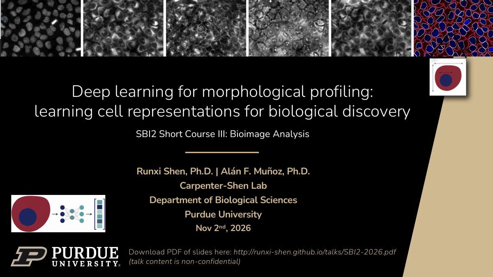

SBI2 2026 View slides ↗Deep learning for morphological profiling
Learning cell representations for biological discovery
SBI2 Short Course III: Bioimage Analysis
Runxi Shen & Alán F. Muñoz
Carpenter-Shen Lab · Purdue University
29 slides PDF 3.6 MB